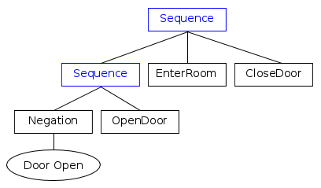

Introduction to BTs
Unlike a Finite State Machine, a Behaviour Tree is a tree of hierarchical nodes that controls the flow of decision and the execution of "tasks" or, as we will call them further, "Actions".
The leaves of the tree are the actual commands, ie.e the place where our coordinating component interacts with the rest of the system.
For instance, in a service-oriented architecture, the leaves would contain the "client" code that triggers an action.
All the other nodes of the tree, those which are not leaves, control the "flow of execution".
To better understand how this flow takes place , imagine a signal, that we will further call "tick" that is executed at the root of the tree and propagates through the branches until it reaches a leave.
The result of a tick can be either:
- SUCCESS
- FAILURE
- RUNNING
The first two, as their names suggest, inform their parent that their operation was a success or a failure. The latter usually means that the execution of the TreeNode is not completed and it needs more time to return a valid result.
The result of a node is propagated back to the parent, that will decide which child should be ticked next or will return a result itself.
Types of nodes
ControlNodes are nodes which can have 1 to N children. Once a tick is received, this tick may be propagated to one or more of the children. It must be noted that children are always ordered, but it is up to the type of control node to decide if they are ticked in the given order.
DecoratorNodes can have only a single child. Their function is either to transform the result they receive from the child, to terminate the child, or repeat processing of the child, depending on the type of decorator.
ActionNodes are leaves and do not have children. The user should implement their own ActionNodes that perform the actual task.
ConditionNodes are equivalent to ActionNodes, with the exeption that they are alwais aotmic (they should not return RUNNING) and they should not alter the state of the system.

Warning
Actions and Conditions differ only in terms of semantic, the C++ framework can not enforce it unfortunately.
Learn by example
To better understand how a BehaviorTree works let's focus on some practical examples. For the sake of simplicity we will not take into account what happens when an action return RUNNING.
We will assume that each Action is executed atomically and synchronously. In future sections we will more thoughtfully analyze asynchronous actions.
Sequence
Let's illustrate how a BT works using the most basic and frequently used ControlNode: the SequenceNode.

It is important to notice that the children of a ControlNode are ordered. In this case the order of execution is from left to right.
A Sequence works as described next:
- If a child returns SUCCESS, tick the next one.
- If a child returns FAILURE, then no more children are ticked and the Sequence returns FAILURE.
- If all the children return SUCCESS, then the Fallback returns SUCCESS too.
In this particular case, if the action GrabBeer failed, the door of the fridge would remain opened, since the last action CloseDoor is skipped.
Let's take into accound another example:

In this case Negation is a DecoratorNode that inverts the result returned by its child.
This means that a Negation followed by the ConditionNode called DoorOpen is equialent to "is the door closed?".
As a result, the branch on the right side means:
"If the door is closed, then open it".
Fallback
FallbackNodes, known also as "Selector" in the literature, Is a node that is used to express, as the name suggests, fallback strategies, ie. what to do if a child return FAILURE.
In short, it ticks the children in order, as usual from left to right and:
- If a child returns FAILURE, tick the next one.
- If a child returns SUCCESS, then no more children are ticked and the Fallback returns SUCCESS.
- If all the children return FAILURE, then the Fallback returns FAILURE too.
In the next example, you can see how Sequence and Fallbacks can be combined:
"Try to open the door,
otherwise unlock it with a key (if you have it),
otherwise smash it.
If any of these actions succeeded, then enter the room".

"Fetch me a beer" revisited
We can now improve the previous example, which attempted to grab a beer from the fridge but left the door open if the beer was not there.
In the next picture we use the color green to represent nodes which will return SUCCESS and red for those which return FAILURE.
The action GrabBeer will always fail.

Both the trees will close the door of the fridge, eventually, but:
- the tree on the left side will always return SUCCESS if we managed to open and clode the fridge.
- the tree on the right side will return SUCCESS if the beer was there, FAILURE otherwise.
We can easily double-check what happen if GrabBeer returns SUCCESS.